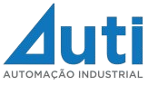
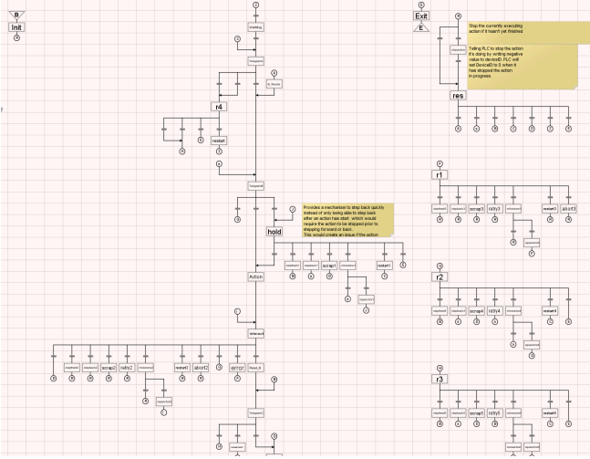
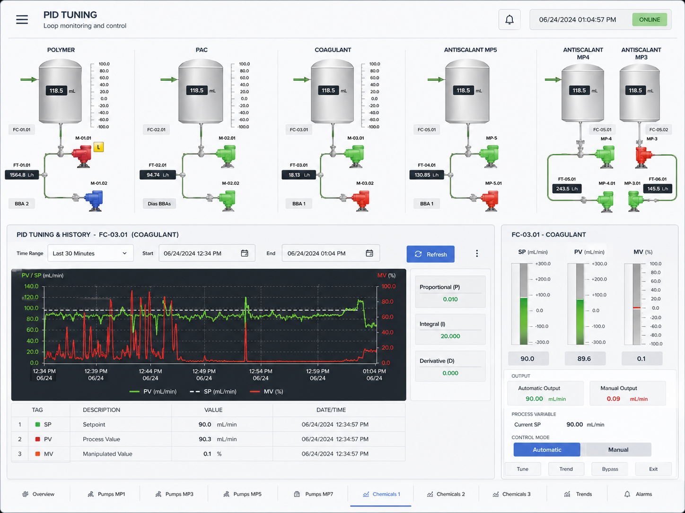
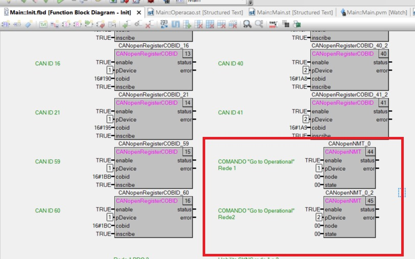
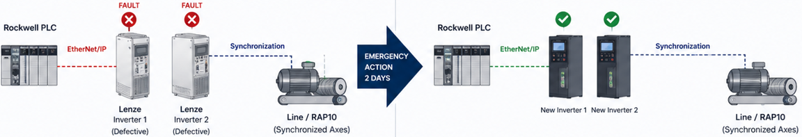
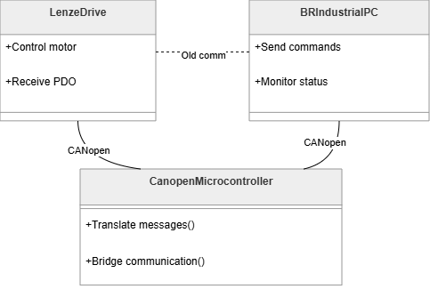
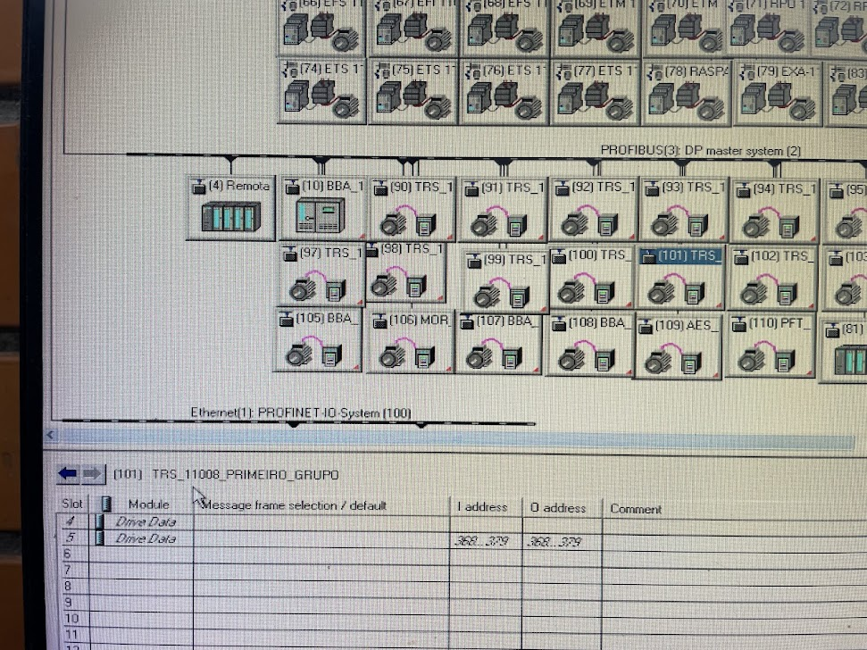

Emergency Response – Bimbo
Urgent replacement and programming of Lenze drives with synchronization, reducing production line downtime and preventing multi-million dollar losses.




The technologies and platforms I work with every day
 Siemens
Siemens Rockwell
Rockwell
 Lenze
Lenze B&R
B&R ABB
ABB Ignition
Ignition
 TIA
Portal
TIA
Portal Step 7
Step 7 Codesys
Codesys CANopen
CANopen Profibus
Profibus
 Profinet
Profinet
 Modbus
Modbus EtherNet/IP
EtherNet/IP OPC UA
OPC UA MQTT
MQTT Python
Python Java
Java Docker
Docker Sepasoft
Sepasoft
 IFM
IFM JavaScript
JavaScript HTML/CSS
HTML/CSS
Siemens, Rockwell, Lenze, B&R · CANopen, EtherCAT, Modbus, PROFINET
Ignition, Node-RED, Elipse E3 · Java, Python, Docker, MySQL
Industry 4.0, OEE Systems, SCADA/MES · PID Control, TAF/TAC, PID Tuning
Real-world industrial solutions designed, built, and deployed
High-impact field interventions that prevented costly downtime
Urgent replacement and programming of Lenze drives with synchronization, reducing production line downtime and preventing multi-million dollar losses.
Retrofit and CANopen behavior masking using a custom microcontroller to maintain compatibility with a B&R industrial PC during drive replacement.
Specialized maintenance and complex fault-finding on Profibus/Profinet networks at large-scale pulp and paper industries.
A trajectory built across industry-leading environments
Focus on Industry 4.0, IT/OT integration, OEE systems using Ignition, Java, Python, and Docker.
Development of large-scale automation projects, SCADA/MES systems and standardization using Siemens and Rockwell platforms.
Maintenance, troubleshooting, electronic diagnostics, and system integration with Lenze drives, CANOpen,
PLCs, and variable frequency drives.
Special thanks for Francis Pini, Vitor and all the team for the opportunity and learnship
during
my time at Motion Up.
The Danfoss Tallahassee plant required real-time visibility into production metrics and machine performance. Manual tracking of production counts, part locations, and downtime events was inefficient, and there was no systematic way to manage response times for critical support calls, hindering operational speed and accountability.
Developed a comprehensive SCADA solution using Ignition Perspective with direct PLC integration via standardized UDTs and handshakes. Key features include:
Reduced response times to line stoppages through immediate visibility and automated escalation. The system provided deep data-driven accountability and was so successful that it was replicated across all three major production lines in the factory.

The Turbocor compressor assembly line in Tallahassee, FL, utilized original manufacturer (OEM) logic that deviated from Danfoss's global "Manufacturing Excellence" standards. The system required a complex migration to a more passive PLC role, where the corporate MES would orchestrate the production flow.
Working with a senior team, I executed the refactoring of both the PLC and SCADA layers during a 10-month project, culminating in a 2-month on-site commissioning phase in the USA. Key technical pillars included:
Successfully migrated the entire assembly line to the new global standard. The solution provides a scalable, maintainable codebase that ensures full repeatability and production traceability, directly validated through successful 24/7 operations in the Florida plant.
Lear Automotive struggled with inaccurate manual downtime logs and untracked micro-stoppages, making it impossible to calculate a reliable OEE baseline. The plant needed a system that enforced data integrity and provided granular visibility into station-level cycle times.
As the Technical Lead, I designed and deployed a robust MES solution using Ignition and the Sepasoft OEE module, integrated with Rockwell PLCs via handshake logic:
Achieved 100% data reliability through machine interlocking across 4 major lines (Cushion, Press, Welding, and Assembly). The real-time OEE visibility allowed management to eliminate untracked micro-stoppages and optimize the production mix effectively.
Industrial tightening tools from Atlas Copco communicate via Open Protocol (TCP/IP), which is not natively supported by Ignition. There was a clear market gap for a robust, native integration that could handle complex fastening data within the SCADA/MES loop without overhead.
Developed a fully functional custom module using the Ignition Module SDK and Java. The product abstracts protocol complexity into a scalable, multi-threaded architecture with a clear separation of responsibilities:
Mid0061Parser.java) for structured payload decoding.ExecutionManager for scheduled tasks like keep-alive (MID 9999).
system.openprotocol.*) using
CompletableFuture to allow scripts to wait for tool confirmation without blocking system
processes.
The module fills a major integration gap, providing full production traceability. It was successfully tested and validated at the DAF factory in Brazil, demonstrating absolute stability in managing fastening data and tool states for high-volume assembly lines.

The paper manufacturing process at IPEL required precise and automated dosing of chemical additives to maintain product quality. Manual dosing was inconsistent and relied heavily on operator intervention, leading to quality fluctuations as production speeds varied.
I independently developed and commissioned the entire automation solution, integrating new logic into a running factory environment:
Delivered a robust, fully automated dosing system that eliminated manual variance and improved production stability. The project was completed with high client satisfaction, meeting all technical goals for precision and reliability under the direct supervision of the plant management.

A textile circulating current dryer machine (RAMA) needed a complete retrofit. The legacy Lenze 9300 drives required replacement with more advanced 8400 generation controllers across a complex CANopen network architecture involving more than 20 coordinated devices.
Retrofitted all 20+ drives and implemented complex drive-to-drive synchronization over CANopen for precise needle control during fabric transport. The existing B&R PLC and HMI were fully reprogrammed, bringing external dryer controls directly into the PLC via MODBUS RTU.
Complete modernization of a critical production asset. The complex synchronized network now ensures robust fabric transport without imposing heavy motion-control burdens on the main PLC.

Bimbo’s RAP10 production line was suffering critical downtime caused by two failed Lenze drives responsible for synchronized motion control. Production losses were estimated at approximately R$1 million every 10 hours of stoppage, creating a high-pressure emergency involving plant supervision, management, and regional leadership.
Dispatched on-site for an emergency retrofit, I replaced and recommissioned two new Lenze drives in just two days, fully reproducing the original synchronization logic between both drives. Reprogrammed the new drives, adapted the Rockwell PLC logic and communications for the new hardware, validated drive coordination with maintenance support, and restarted the complete production line under live operational pressure.
Production was restored after a complete emergency migration of two critical drives, preserving synchronized machine operation and avoiding major downtime losses. The project required rapid integration with the OEM, electrical maintenance and plant team, and stands out as a high-pressure recovery executed successfully under severe time and business constraints.

Posigraf's printing press used a B&R industrial PC as the motion master, communicating with a fleet of drives over CANopen. The drives needed replacement but the new models had a different CANopen profile (PDO mapping), making them incompatible with the existing B&R program — which could not be modified.
Designed and built a custom microcontroller-based adapter that sat between the B&R master and the new drives. The adapter presented the old CANopen profile to the B&R while translating all commands and status words to the new drive's profile in real time — effectively masking the hardware change from the host controller.
Full machine compatibility restored without touching the B&R source code. Machine resumed operation with zero visible change to operator or existing software.

Large-scale pulp and paper plants with hundreds of field devices on Profibus segments experienced intermittent communication faults, drive trips, and unexplained PLC errors that in-house teams couldn't diagnose.
Conducted systematic network analysis using Profibus protocol analyzers to identify signal degradation, termination issues, duplicate node addresses, and incompatible GSD configurations. Replaced faulty network components, corrected cable routing, and reconfigured problematic nodes.
Resolved long-standing intermittent faults across multiple plants. In one case, a root-cause was traced to a single corroded connector responsible for 3 months of unexplained production losses.